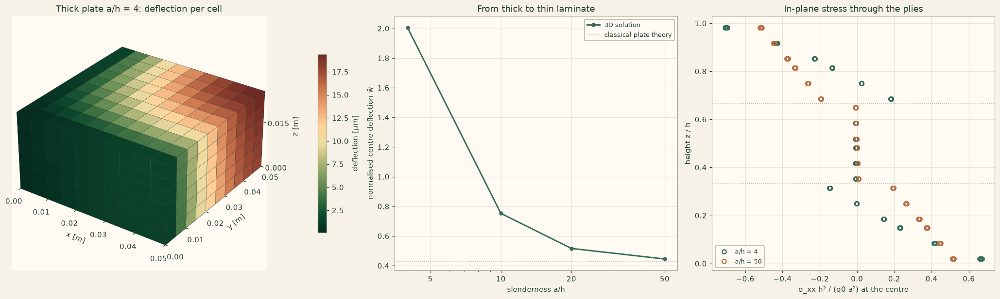
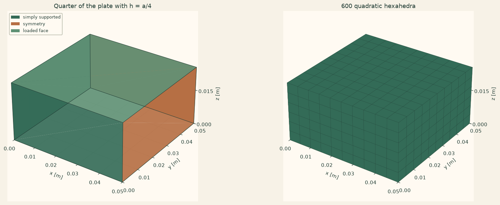

Docs › Examples › Bending of a simply supported cross-ply laminate
Composites · 3D
Bending of a simply supported cross-ply laminate
A thick square [0/90/0] composite laminate, simply supported on all edges, under a doubly sinusoidal pressure.
Run locally with OneSimulation. The example downloads are free. Running them requires an activated runtime. Runtime Alpha 0.2.1a7 · CPython 3.13 on macOS (Apple Silicon), Ubuntu 22.04 (x86-64), and Windows x64. Installation and activation · View pilot plans. Scope of the reference checks.


What it computes
OneSimulation solves the laminate as a 3D anisotropic solid on quadratic hexahedra with the orthotropic ply stiffness turned ply by ply through a material orientation per point; a quarter is modelled with symmetry planes, for four thickness ratios from a/h = 4 to 50. The script that builds the STEP files comes with the notebook.
What it checks
Classical laminated plate theory gives w̄ = 0.4312 for every thickness; the 3D solution approaches it as the plate gets thinner (ratio 1.032 at a/h = 50) and shows that the thick plate of the problem, a/h = 4, is 4.6 times as flexible (w̄ = 2.005) because of transverse shear.
Geometry
The notebook starts at the import of the CAD files composite_laminate_bending.step, composite_laminate_bending_s10.step, composite_laminate_bending_s20.step, composite_laminate_bending_s50.step: STEP (AP242), readable by any CAD program, with the names of the faces that the boundary conditions use. Put them next to the notebook.


The geometry script
The script composite_laminate_bending_geometry.py builds the geometry with the CAD objects of OneSimulation and writes the files. Change a dimension there, run it, and run the notebook again.
"""Geometry of the OneSimulation example "Bending of a simply supported cross-ply laminate".
Builds one quarter of a square laminated plate of side a = 100 mm with the CAD objects of
OneSimulation: the box 0 <= x, y <= a/2, 0 <= z <= h. The plate with h = a/4 is written to
composite_laminate_bending.step, the thinner plates with h = a/10, a/20 and a/50 to
composite_laminate_bending_s10.step, _s20.step and _s50.step. The faces keep their names x_min and
y_min (simply supported edges), x_max and y_max (symmetry planes), z_min and z_max (lower and
loaded upper face).
"""
from onesim.cad.d3 import Box
side = 0.100
for ratio, suffix in ((4, ""), (10, "_s10"), (20, "_s20"), (50, "_s50")):
Box(length=side / 2, width=side / 2, height=side / ratio).save(
f"composite_laminate_bending{suffix}.step"
)The notebook
The complete notebook, cell by cell. Run it to produce the figures and the comparison printout.
A square plate of side \(a\) and thickness \(h=a/4\) is made of three plies of equal thickness with the fibres along \(x\), \(y\) and \(x\) ([0/90/0]). Each ply is a transversely isotropic composite,
| \(E_1\) | \(E_2=E_3\) | \(G_{12}=G_{13}\) | \(G_{23}\) | \(\nu_{12}=\nu_{13}=\nu_{23}\) |
|---|---|---|---|---|
| \(25E_2\) | 6.9 GPa | \(0.5E_2\) | \(0.2E_2\) | 0.25 |
The plate is simply supported on its four edges and loaded on its upper face by \(q=q_0\sin(\pi x/a)\sin(\pi y/a)\). One quarter is modelled:
| face | condition |
|---|---|
x_min (edge \(x=0\)) | \(u_y=u_z=0\) |
y_min (edge \(y=0\)) | \(u_x=u_z=0\) |
x_max, y_max (symmetry planes \(x=a/2\), \(y=a/2\)) | \(u_x=0\), \(u_y=0\) |
z_max | pressure \(q\) |
The quarter plates come from the CAD files composite_laminate_bending.step (\(h=a/4\)) and ..._s10, _s20, _s50.step (thinner plates for the comparison with plate theory); the script composite_laminate_bending_geometry.py builds them with the CAD objects of OneSimulation.
Reference. J. N. Reddy, Mechanics of Laminated Composite Plates and Shells, 2nd ed., CRC Press (2004), Sec. 5.2: the Navier solution of classical laminated plate theory for this load is a single term, with the bending stiffnesses \(D_{ij}\) of the laminate,
Plate theory neglects transverse shear deformation, so it holds for thin plates; for \(h=a/4\) the 3D solution is expected to be far more flexible.
import numpy as np
from onesim.cad.exchange import load
from onesim.meshing import StructuredHexahedralMesher
from onesim.physics.solid_mechanics import SmallStrainSolid
from onesim.visualization import plots, theme
theme.set()Geometry and mesh
Quadratic hexahedra, 10 x 10 across the quarter and two per ply through the thickness, so that the ply interfaces lie on element faces.
ratios = (4, 10, 20, 50)
plates = {
s: load(f"composite_laminate_bending{'' if s == 4 else f'_s{s}'}.step")
for s in ratios
}
side = 2 * plates[4].size[0]
meshes = {
s: StructuredHexahedralMesher(cells=(10, 10, 6)).generate(plate)
for s, plate in plates.items()
}
view = plots.Camera(elevation=30, azimuth=-55)
faces = plates[4].boundaries
fig = plots.figure(1, 2, size=(15, 5.5))
plots.geometry(
plates[4],
selection={
"simply supported": faces.x_min | faces.y_min,
"symmetry": faces.x_max | faces.y_max,
"loaded face": faces.z_max,
},
labels=False,
camera=view,
title="Quarter of the plate with h = a/4",
ax=fig[0],
)
plots.mesh(
meshes[4],
groups=("all",),
legend=False,
camera=view,
title=f"{meshes[4].cell_count} quadratic hexahedra",
ax=fig[1],
)
plots.show()Model
SmallStrainSolid with volume kinematics takes a selected elastic stiffness and a material orientation per point. The ply stiffness is the inverse of the orthotropic compliance in the order xx, yy, zz, xy, yz, xz; the middle third of the thickness is turned by 90° about \(z\).
E2 = 6.9e9
E1, G12, G23, nu, load_amplitude = 25 * E2, 0.5 * E2, 0.2 * E2, 0.25, 1.0e6
compliance = np.diag([1 / E1, 1 / E2, 1 / E2, 1 / G12, 1 / G23, 1 / G12])
compliance[0, 1] = compliance[1, 0] = compliance[0, 2] = compliance[2, 0] = -nu / E1
compliance[1, 2] = compliance[2, 1] = -nu / E2
ply = np.linalg.inv(compliance)
turned = np.array([[0.0, -1.0, 0.0], [1.0, 0.0, 0.0], [0.0, 0.0, 1.0]])
results = {}
for s, plate in plates.items():
h, sides = side / s, plate.boundaries
results[s] = SmallStrainSolid(
youngs_modulus=E2, poisson_ratio=nu, kinematics="volume"
).solve(
mesh=meshes[s],
times=(0.0,),
order=2,
elastic_stiffness=ply,
material_orientation=lambda points, time, h=h: np.where(
(np.abs(np.asarray(points)[:, 2] - h / 2) < h / 6)[:, None, None],
turned,
np.eye(3),
),
displacements=(
(sides.x_min, "y", 0.0),
(sides.x_min, "z", 0.0),
(sides.y_min, "x", 0.0),
(sides.y_min, "z", 0.0),
(sides.x_max, "x", 0.0),
(sides.y_max, "y", 0.0),
),
tractions=(
(
sides.z_max,
lambda x, y, z: np.stack(
(
0 * x,
0 * x,
-load_amplitude
* np.sin(np.pi * x / side)
* np.sin(np.pi * y / side),
),
axis=-1,
),
),
),
)Results
The normalised deflection at the centre of the mid-plane for the four thickness ratios against classical laminated plate theory. With equal ply thicknesses the bending stiffnesses are \(D_{11}=h^3(26Q_{11}+Q_{22})/324\), \(D_{22}=h^3(26Q_{22}+Q_{11})/324\), \(D_{12}=Q_{12}h^3/12\) and \(D_{66}=G_{12}h^3/12\), with the reduced ply stiffnesses \(Q_{ij}\).
q11, q22, q12 = (E1, E2, nu * E2) / np.array(1 - nu**2 * E2 / E1)
plate_theory = (
100
* E2
/ (
np.pi**4
* ((26 * q11 + q22) / 324 + 2 * (q12 + 2 * G12) / 12 + (26 * q22 + q11) / 324)
)
)
deflection = {
s: -results[s].evaluate_displacement(
np.array([[side / 2, side / 2, side / s / 2]])
)[0, 2]
* 100
* E2
* (side / s) ** 3
/ (load_amplitude * side**4)
for s in ratios
}
print(f"classical laminated plate theory: w̄ = {plate_theory:.4f} for every thickness")
print("a/h 3D solution w̄ ratio to plate theory")
for s, value in deflection.items():
print(f"{s:3d} {value:15.4f} {value / plate_theory:21.3f}")Figure
The deflection of the thick plate, the normalised deflection over the slenderness against plate theory, and the in-plane stress \(\sigma_{xx}\) at the integration points of the centre column of cells for the thick and the thinnest plate: the thick plate is no longer linear in each ply.
centre = {
s: (results[s].quadrature_coordinates[:, 0] > side / 2 - side / 20)
& (results[s].quadrature_coordinates[:, 1] > side / 2 - side / 20)
for s in (4, 50)
}
profiles = {
f"a/h = {s}": (
results[s].stress[0][centre[s], 0, 0]
* (side / s) ** 2
/ (load_amplitude * side**2),
results[s].quadrature_coordinates[centre[s], 2] / (side / s),
)
for s in (4, 50)
}
fig = plots.figure(1, 3, size=(19, 5.5))
plots.mesh(
meshes[4],
cell_values=-1e6
* results[4].evaluate_displacement(
np.asarray(meshes[4].coordinates)[np.asarray(meshes[4].cells)].mean(axis=1)
)[:, 2],
camera=view,
label="deflection [µm]",
title="Thick plate a/h = 4: deflection per cell",
ax=fig[0],
)
plots.line(
list(ratios),
{"3D solution": list(deflection.values())},
markers=True,
hlines={"classical plate theory": plate_theory},
scale="logx",
xlabel="slenderness a/h",
ylabel="normalised centre deflection w̄",
title="From thick to thin laminate",
legend="upper right",
ax=fig[1],
)
plots.line(
points=profiles,
hlines=[1 / 3, 2 / 3],
xlabel="σ_xx h² / (q0 a²) at the centre",
ylabel="height z / h",
title="In-plane stress through the plies",
legend="lower left",
ax=fig[2],
)
plots.show()Going further
Change the stacking to [0/90/90/0] or an angle ply by changing the orientation per ply, or load the plate with a uniform pressure: the Navier series then needs more terms, the 3D model does not change.